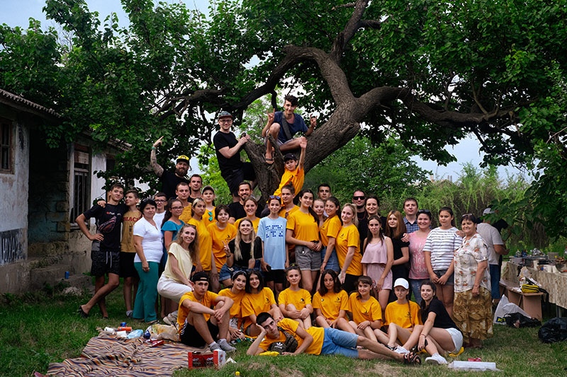

Как мы проводили время?
Как мы проводили время? В первую очередь, рассказывали про информационные технологии и их направления! Ребята узнали о таких профессиях как тестировщик, системный администратор, сайт-менеджер, дизайнер, программист и веб-разработчик.
В один из вечеров мы пообщались с ребятами в неформальной обстановке, чтобы узнать их впечатления от всего происходящего. И получили положительный и вдохновляющий фидбек! Мы всей душой радовались тому, насколько интересные и разносторонние дети в Кубей — с горящими глазами, пытливым умом, со здоровыми увлечениями и большим уважением к традициям и культуре.
После этой поездки каждый из участников нашей команды и, надеемся, наши подопечные, получили заряд мотивации для будущих свершений. Это путешествие можно охарактеризовать такими словами как “открытость, искренность и улыбка”, которая не сходила с лиц каждого из нас. Мы встретили множество талантливых и удивительных ребят с невероятными жизненными целями которых они непременно достигнут.
Спасибо за теплый прием! Это только начало, мы верим в вас!